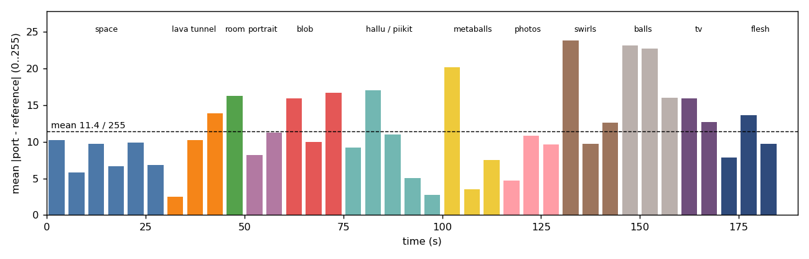
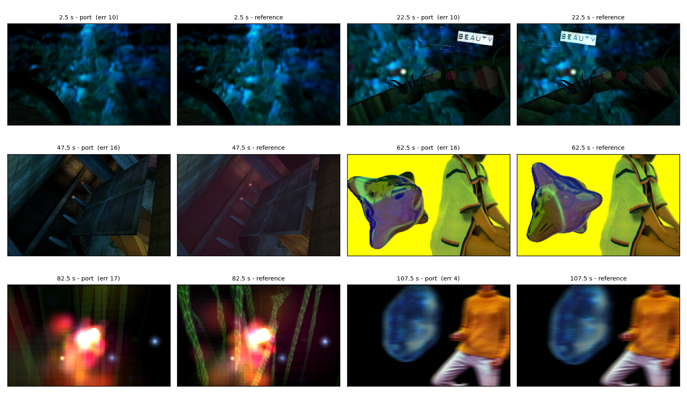
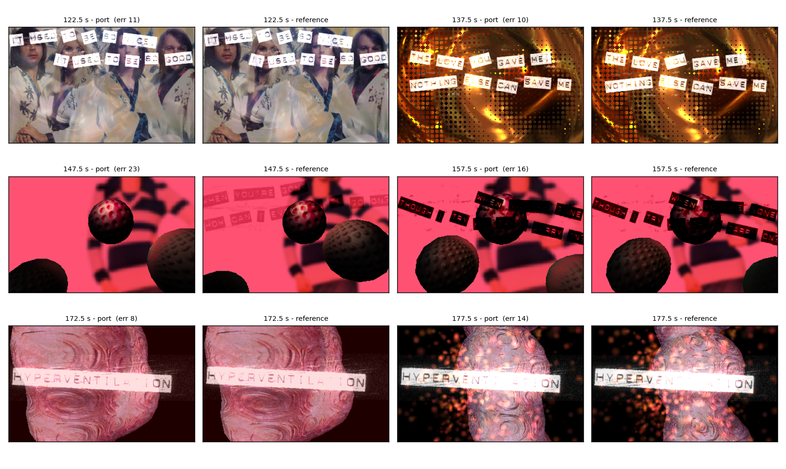
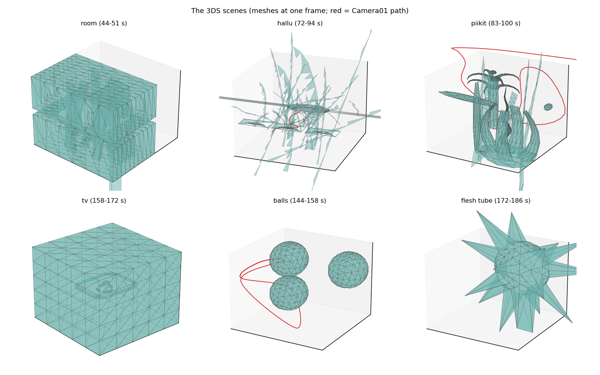
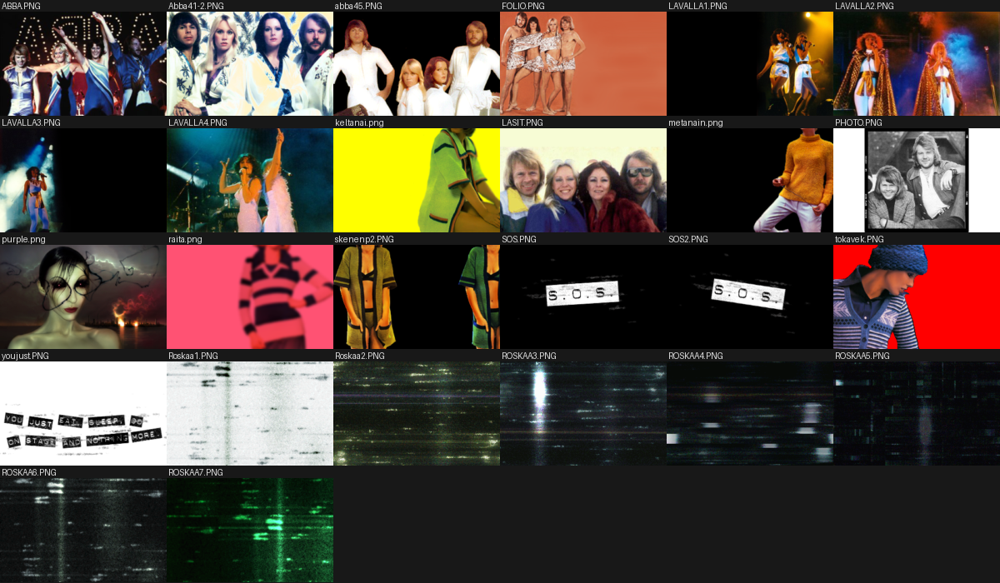
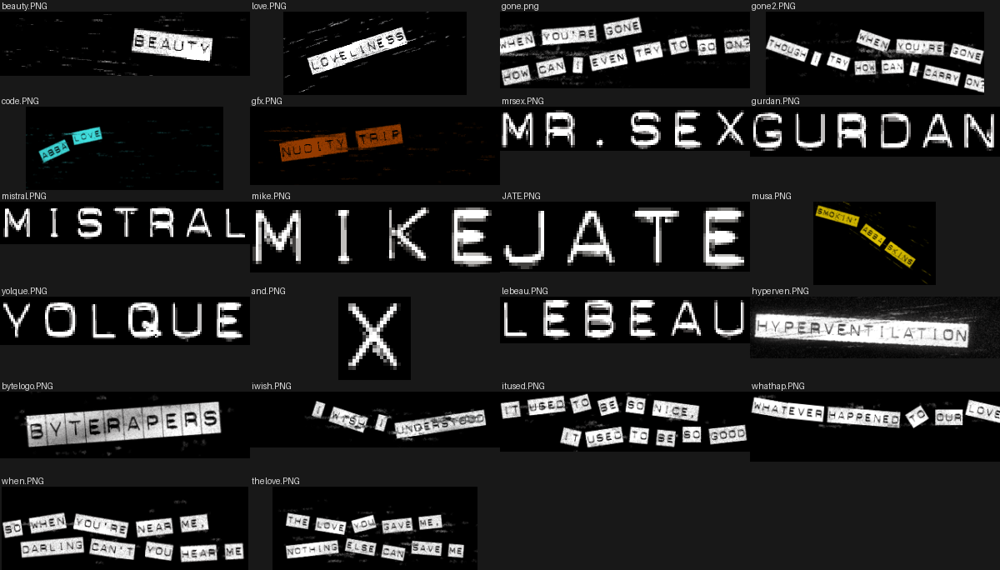
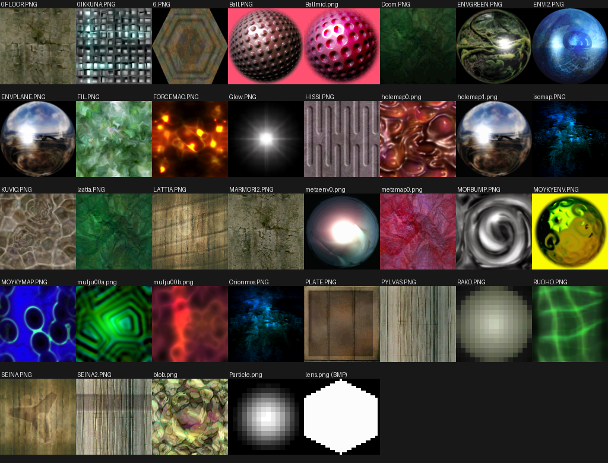
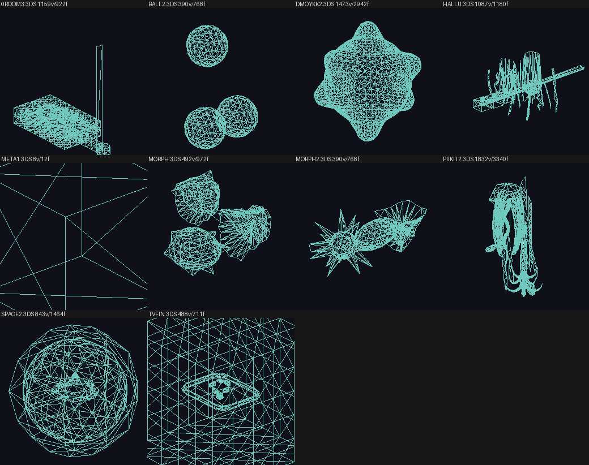

Code: Mr.Sex, Gurdan. Visuals: Mistral, Mike, Jate. Music: Yolk &
Legend (Hypermmx.xm, 52 orders, 189.5 s). A true-colour
software-3D demo: Watcom C++ 32-bit under PMODE/W, MIDAS 0.7 b1 for
sound, VESA 2.0 linear framebuffer, 320x240 at 32/24/16/15
bpp (menu at start; "S" = secret mode is not found in normal
VESA). The picture is a 320x200 viewport centred in the 320x240
screen (20-pixel black bars); 320x240 has square pixels, so the
correct display aspect is 4:3 (the port shows the 320x240 canvas at 4:3,
never letterboxed square-pixel 16:10).

Figure: mean absolute error (0-255) of the port against 37 frames of the emulated original (every 5 s), per scene; the dashed line is the mean.


Figures: port (left) against the emulator's reference frame (right) for twelve of the 37 frames.

Figure (3D): the 3DS scenes of the demo as wireframe-shaded
meshes, with the Camera01 path in red. Explore them interactively in web/viewer3d.html (three.js:
orbit, wireframe, light and camera-path toggles, and the space scene's
cavern sphere following the camera). Everything here is regenerated by
node tools/export_meshes.mjs > web/assets/meshes.json
and python3 tools/make_figures.py FRAMES_DIR.
The demo is one table of 28-byte records at 0x104aa0
{order,row,type,func,a,b,c} (168 records), fired when MIDAS
reports order*64+row (see WRITEUP-asm.md, snippet 6).
Animation time is the 70 Hz timer
(1 tick = 1 3DS keyframe). We rebuilt the timeline in
web/assets/script.json (order/row converted with the XM
tempo model tools/xmtime.py) and replay it exactly: 43
sprites (0x105dfc: image, blend alpha, flags, position), fades, flashes,
scene switches. Original scene-switch times (seconds):
| time | event | scene (render callback) |
|---|---|---|
| 0.0 | start | space - space2.3ds, Orion nebula dome,
arches, ABBA photos fading over (cb 0x20f68) |
| 30.0 | red flash | lava tunnel (cb 0x23528, init 0x2329c; a distortion
grid with three moving 1/r attractors, see WRITEUP-asm.md sections 11
and 49; bit-exact) with the skenenp2 kid sprite |
| 44.1 | room - 0room3.3ds (cb 0x1f040) |
|
| 51.2 | hyperven.png | title sprite over a portrait photo (purple.png) |
| 58.0 | white flash | blob - dmoykk2.3ds, env-mapped
1473-vertex blob on keltanai.png (cb 0x24bac) |
| 72.4 | hallu - hallu.3ds: glass dome, grass,
comet particle (cb 0x1e7d8) |
|
| 83.1 / 93.7 | piikit - piikit2.3ds (cb 0x1f45c);
returns to hallu 86.6-93.7 |
|
| 100.6 | metaballs (cb 0x24578), orange-sweater lady
metanain.png |
|
| 114.7 | white flash | photos + lyric strips (cb 0x20bc4): abba45,
iwish, itused, whathap,
when |
| 129.6 - 143.6 | green / orange swirl tunnels (holemap, forcemap,
mulju textures), sos text |
|
| 143.7 | pink raita backdrop with three env-mapped balls
(ball2.3ds) |
|
| 157.8 | TV - tvfin.3ds dark grid, cyan
particles; credits strips (mrsex, gurdan, mistral, mike, jate, yolque,
lebeau) |
|
| 171.9 | red flash | flesh tube - morph2.3ds (MORMAP +
MORBUMP + MORENV) with orange particles, "HYPERVENTILATION"/"BYTERAPERS"
strips |
| 182.5 | white fade | youjust.png ("You just eat, sleep, go on stage and
nothing more") on white; ends 185.8+ |
(The cb trace of the original after 100 s was lost to an emulator
problem in the first run; the times after 100 s come from the script and
from the re-rendered frames in re/golden/.) Sprite
commands: 1 start, 2 stop, 4 fade-in (c ticks), 5 fade-out (c ticks), 6
fade to colour, 7 flash colour (duration in ticks), 8 cancel; sprite
kinds in the table: 0x10001 = photo (alpha 0.4-0.55, used as is), 2 =
lyric/credit strip image, 1 = abba41-2.png, the full-opacity photo of
the 114.7 s lyric scene. The sprite table starts one 36-byte
record before 0x105dfc: record 0 is lasit.png (the
4-faces photo at 5.3-8.8 s), so the script's sprite ids index the table
directly and the dumped list is shifted by one (found by correlating the
original's frames with every image; this off-by-one had shown the wrong
photo and lyric strip all over the demo).
Classes seen through RTTI strings:
beSCENE, beCAMERA, beLIGHT, beMESH, beSPLINE/beSPLINEMESH, bePOSKEY, bePARTICLE_SYSTEM, beISO, beQUAT, beMATRIX, beRASTER, beCLIPPER, beBITMAP, beVESA.
.3DS (R3/R4) parsed at
start-up by the scene constructor 0x2bf23; material names like
SEINA.BMP/DOOM.GIF in the files are redirected
to the .PNG in Hyper.dat by the bitmap loader
(0x49ee4; beBITMAP supports PNG/BMP/PCX). Hyper.dat is a
"(B)ZIP" archive (see README).MOYKYENV,
ENVGREEN, MORENV, BALL.PNG...)
and bump mapping (MORBUMP, bump.png, material
MORFFI), selected by self-modified code.particle00..03
in the 3DS files are emitters (bePARTICLE_SYSTEM, sprite
particle.png, rand()-driven spread, per-tick spawn at
0x1e8e8); glow/flash/flare lights
draw glow.png/lens.png flares.morph.3ds (3 targets of 164
vertices) and morph2.3ds (3 x 130) are interpolated between
objects (strings "Cannot find morph object").meta1.3ds is only a placeholder node + camera; the surface
is generated every frame (class at 0x36914..0x37da4, textures
isomap.png/envi2.png). Ported 1:1: 5 balls,
each position 0.4*360*(sin a1, cos a2, sin a3) with three
10-bit phases A,B,C advancing by speed*ticks (speeds
[1,4,-2,3,5], [1,-4,-3,4,-2], B==C),
a1=A+B+C, a2=A+C, a3=B-C/2; field
= Wyvill soft object 1-4/9(r/R)^6+17/9(r/R)^4-22/9(r/R)^2
(R=198, zero beyond), summed on a 17^3 grid (step 45, extent +-360), iso
level 0.12, marching cubes (the original's edge/triangle tables are
copied to assets/mc.json), normals from forward
differences, texture coords 4(1+atan2(z,x)/pi),
4(1+atan2(z,y)/pi). The object is placed by the
meta node's position track driven by music time
(order*64+row-0x740)*10. The projection was recovered from
the emulator's projected vertices (RANSAC DLT): focal 197.58, centre
(159.5, 99.5), model space is the 3DS space with y/z swapped. The look
(dark translucent blue, depth-of-field blur on some frames) comes from a
depth-sorted translucent pass ([cam+0x3c]=7, bucket flush
0x2ae88) that is not ported: the port draws z-buffered
0.35*isomap + 0.4*envi2.web/js/engine.js
drawScene/Scene3D.lightsAt)Per-vertex, per-channel, point lights only, no specular.
L = ambient(3DS chunk 0x2100, 0..255) + 2 + sum over lights [ smoothstep(inner, outer) * multiplier * max(0, N.D) / |D| * light colour (0..255) ],
clamped to 250, optionally multiplied by a depth fade
clamp(1 - z*k, 0, 1) (on in the hallu/piikit/tv scenes: k =
0.00194, 0.00078/0.0009, 0.00068), then
texel * floor(L/4) / 64 per channel through the 64 KB shade
LUT (63 light levels per channel, visible as banding on the room walls).
The numbers were validated against the emulated original: 0.1 %
agreement on a 10-light room vertex (the remainder is the rounding of
the logged inputs). Lights carry the 3DS colour (chunk 0x0010 x255),
inner/outer range (0x4659/0x465A) and multiplier (0x465B, 5.0 in hallu);
a light with outer range 0 contributes nothing. The 3DS light
position tracks are keyframed (TCB), as for objects. The
"flash" lights (the amber and blue running lights in
the room, the five in the space dome, a few in hallu/piikit) have their
ranges animated by the scene code:
range = base * max(0, cos(2*pi*t/1.19 + phase)), four
lights a quarter-period apart, which makes the light run down the
corridor. That animation is not in the 3DS files; it was sampled from
the original (re/lightdump.py,
tools/bake_lights.py ->
web/assets/lightanim.json) and is replayed with linear
interpolation. The morph2 flesh scene never calls the
lighter, so the port draws it unlit.
An earlier version of this section described a "flesh" scene built on
morph2.3ds. That was wrong: at 175 s the original executes
none of the 0x25xxx morph code. The scene is the second iso-surface
object (init 0x23814, render callback 0x239bc, sampler 0x23ac0) with
metamap0.png (red crinkle), metaenv0.png
(environment) and bump.png (swirl bump), plus a particle
emitter. Everything below was read from the code and checked against the
emulator:
[40,-20,-40,134,40,-35,50,57,-90,68]; at |y| >= 1000 it
re-enters at the other end with a new random (x,z) = rand()%400 (init:
rand()%500-250). rand() is Watcom's LCG
(s = s*0x41c64e6d+0x3039; (s>>16)&0x7fff) seeded
by time(), shared with the particles, so the port replays
the re-entry positions logged from the reference run
(assets/isoballs.json).[obj+0x184] & 1 selects planar v: u =
4(1+atan2(z,x)/pi), v = 4 + 0.005 y. Normals are the (un-negated) field
gradient; env coords u = 0.5(1+n.right), v = 0.5(1-n.up) (0x4b045).
Mapper: texture + bump-perturbed environment, averaged (see asm section
13); texture palettes are the PNG palettes, no lighting.isoParticles): 49 per
frame, v = U(-250,250)^3, colour (100,40,25)+-12.8, size 30..35
(x1.02^dt per frame), life 250 ticks, gravity (0,-1,0), additive 16x16
particle.png blit with LUT row tint>>2
of the second shade table (min(255, texel*row/32)),
z-tested at the centre pixel against the scene depth.pallo.3ds (stored in Hyper.dat as
PALLO.PNG) and 3ds.bak are older copies of the
ball2 scene and are not loaded by the demo.
Scene -> files (from the load trace in
re/boot_trace.py): space = space2.3ds + laatta, orionmos
(map and env), doom; room = 0room3.3ds + seina, plate, lattia, 0floor,
0reuna, pylvas, seina2, rako, 6, hissi; hallu = hallu.3ds + ruoho,
0ikkuna, marmori2, envgreen; piikit = piikit2.3ds + kuvio, ruoho,
envgreen; morph = morph.3ds + doom, envplane; morph2 = morph2.3ds +
mormap, morbump, morenv; blob = dmoykk2.3ds + moykymap, moykyenv; balls
= ball2.3ds + ball, ballmid; tv = tvfin.3ds + envplane, 0ikkuna;
metaballs = isomap, envi2, metamap0, metaenv0, bump.
Photos/pictures (320x200): abba, abba41-2, abba45, folio, lavalla1-4,
roskaa1-7 (noise-lines "TV" frames), keltanai, lasit, metanain, photo,
purple, raita, skenenp2, sos, sos2, tokavek, youjust; lyric / credit
strips: beauty, love, gone, gone2, code, gfx, mrsex, gurdan, mistral,
mike, jate, musa, yolque, and, lebeau, hyperven, bytelogo, iwish,
itused, when, whathap, thelove. Textures: see the contact sheet
shots/ and web/assets/img.
Container. All art is in Hyper.dat, the
"(B)ZIP" archive of section 2 / README: 16-byte header
((B)ZIP, 0x102, count 104), then 104 entries of 0x30 bytes
{name[0x20], offset, size, size, 0}; files are stored
raw, uncompressed (the archive reader is at 0x26cb0,
the bitmap loader at 0x49ee4). The pictures are therefore ordinary PNG
files, the meshes ordinary 3D Studio (R3/R4) files: extraction is just
slicing at offset, size (re/dat/ holds the 104
slices, numbered in directory order). Facts below were re-read from
Hyper.dat with Pillow (sizes, modes, colour counts) and
from the 3DS chunks (tools/parse3ds.py). Material names
inside the 3DS files (SEINA.BMP, DOOM.GIF...)
are redirected to the PNG of the same stem; five pairs are
byte-identical files stored twice (checked by hash):
0FLOOR=0REUNA,
ENVPLANE=MORENV,
metamap0=MORMAP,
MEFIS=forcemap,
Bump=MORBUMP. Indexed PNGs carry their own
256-entry palette (the engine's texture mappers are paletted, section
2); the 24-bit ones are the 320x200 photographs and
Orionmos, RUOHO, RAKO. "Colours
used" below is the number of distinct colours actually present.
ABBA (40913 colours), Abba41-2 (39563),
abba45 (23721), FOLIO (21847),
LAVALLA1..4 (17745 / 52900 / 16050 / 42490),
keltanai (14068), LASIT (38934),
metanain (16835), purple (33048),
raita (11636), skenenp2 (17404),
tokavek (22006); PHOTO and
youjust are 24-bit files with exactly 256 colours. Eight
further 320x200 pictures are 8-bit palette PNGs: Roskaa1..7
(the noise-lines "TV" frames, 196..256 colours) and SOS,
SOS2 (254, 253).

Full-width strips (320 px wide): bytelogo 320x86,
code 320x135, gone 320x99, gone2
320x122, hyperven 320x79, itused 320x77,
iwish 320x72, thelove 320x130,
whathap 320x90, when 320x108; others:
beauty 220x57, love 212x96, gfx
259x82, musa 231x157. Name tags with only 17 colours:
and 21x24, gurdan 134x27, JATE
85x24, lebeau 132x25, mike 88x25,
mistral 157x27, mrsex 134x24,
yolque 134x26.

Palette PNGs unless noted. 64x64:
0FLOOR/0REUNA (107 colours),
0IKKUNA (256), Doom (74), Glow
(199, flare sprite), laatta (211), PYLVAS
(191), SEINA (153), SEINA2 (232),
RUOHO (24-bit, 3296). 128x128: 6,
Ball, Ballmid, ENVI2
(sphere-shaped environment map), HISSI,
isomap, LATTIA, MARMORI2,
PLATE. 256x256: blob,
Bump/MORBUMP (216, swirl bump map),
ENVGREEN, ENVPLANE/MORENV,
FIL, FORCEMAO,
forcemap/MEFIS, holemap0/1,
KUVIO, metaenv0,
metamap0/MORMAP, MOYKYENV,
MOYKYMAP, mulju00a/b, Orionmos
(24-bit, 6514). Small sprites: Particle 16x16 (31 colours,
additive spark), RAKO 16x16 (24-bit, 214),
lens.png 32x32 (an 8-bit BMP, 2 colours,
the lens-flare hexagon; converted to PNG in
web/assets/img).

Sizes are from the directory; vertex/triangle totals were re-counted from the 3DS chunks and agree with the per-file lists in section 4. Coordinates are stored Z-up in 3DS space (the engine swaps y/z). The wireframe shows every mesh of the file together, as stored (before keyframer transforms), one fixed view; materials, lights and cameras are listed in the per-file entries above.
| file | offset | bytes | vertices | triangles |
|---|---|---|---|---|
0ROOM3.3DS |
21184 | 73720 | 1159 | 922 |
BALL2.3DS |
494919 | 20712 | 390 | 768 |
DMOYKK2.3DS |
644956 | 77152 | 1473 | 2942 |
HALLU.3DS |
1086625 | 56254 | 1087 | 1180 |
META1.3DS |
1907642 | 3010 | 8 | 12 |
MORPH.3DS |
2146564 | 24509 | 492 | 972 |
MORPH2.3DS |
2171073 | 16881 | 390 | 768 |
PIIKIT2.3DS |
2535496 | 96444 | 1832 | 3340 |
SPACE2.3DS |
3127549 | 48221 | 843 | 1464 |
TVFIN.3DS |
3263658 | 28878 | 488 | 711 |
Two more 3DS files are not loaded: 3DS.BAK (offset
94904, 20713 bytes) and PALLO.PNG (offset 2475371, 14602
bytes, a 3DS under a PNG name; 260 vertices / 512 triangles per its file
entry above).

web/assets/mc.json, the recorded ball re-entries in
web/assets/isoballs.json). META1.3DS is only a
placeholder node (8 vertices) and a camera.re/lightdump.py, web/assets/lightanim.json),
not in the 3DS; particle initial states are rand()-driven
in the original and dumped from the emulator for the port
(pseeds*.json); lens/glow flares use
lens.png/Glow.png.web/assets/fogtab.json; fog.json
holds the per-frame depth-fade state; the 64 KB shade LUT is described
in WRITEUP-asm.md.| file | offset | bytes | size | format | colours used |
|---|---|---|---|---|---|
0FLOOR.PNG |
5008 | 5401 | 64x64 | PNG 8-bit palette | 107 |
0IKKUNA.PNG |
10409 | 5374 | 64x64 | PNG 8-bit palette | 256 |
0REUNA.PNG |
15783 | 5401 | 64x64 | PNG 8-bit palette | 107 |
0ROOM3.3DS |
21184 | 73720 | 3DS (R3/R4) | ||
3DS.BAK |
94904 | 20713 | 3DS (R3/R4) | ||
6.PNG |
115617 | 13962 | 128x128 | PNG 8-bit palette | 243 |
ABBA.PNG |
129579 | 127027 | 320x200 | PNG 24-bit RGB | 40913 |
Abba41-2.PNG |
256606 | 142580 | 320x200 | PNG 24-bit RGB | 39563 |
abba45.PNG |
399186 | 80070 | 320x200 | PNG 24-bit RGB | 23721 |
and.PNG |
479256 | 1165 | 21x24 | PNG 8-bit palette | 17 |
Ball.PNG |
480421 | 14498 | 128x128 | PNG 8-bit palette | 253 |
BALL2.3DS |
494919 | 20712 | 3DS (R3/R4) | ||
Ballmid.png |
515631 | 13627 | 128x128 | PNG 8-bit palette | 244 |
beauty.PNG |
529258 | 3895 | 220x57 | PNG 8-bit palette | 243 |
blob.png |
533153 | 51611 | 256x256 | PNG 8-bit palette | 256 |
Bump.png |
584764 | 37743 | 256x256 | PNG 8-bit palette | 216 |
bytelogo.PNG |
622507 | 14200 | 320x86 | PNG 8-bit palette | 256 |
code.PNG |
636707 | 7006 | 320x135 | PNG 8-bit palette | 220 |
data.lst |
643713 | 1243 | text list of the 103 other names | ||
DMOYKK2.3DS |
644956 | 77152 | 3DS (R3/R4) | ||
Doom.PNG |
722108 | 4428 | 64x64 | PNG 8-bit palette | 74 |
ENVGREEN.PNG |
726536 | 40502 | 256x256 | PNG 8-bit palette | 256 |
ENVI2.PNG |
767038 | 11251 | 128x128 | PNG 8-bit palette | 255 |
ENVPLANE.PNG |
778289 | 32381 | 256x256 | PNG 8-bit palette | 256 |
FIL.PNG |
810670 | 48545 | 256x256 | PNG 8-bit palette | 256 |
FOLIO.PNG |
859215 | 87647 | 320x200 | PNG 24-bit RGB | 21847 |
FORCEMAO.PNG |
946862 | 46170 | 256x256 | PNG 8-bit palette | 253 |
forcemap.png |
993032 | 50932 | 256x256 | PNG 8-bit palette | 246 |
gfx.PNG |
1043964 | 6157 | 259x82 | PNG 8-bit palette | 147 |
Glow.PNG |
1050121 | 3637 | 64x64 | PNG 8-bit palette | 199 |
gone.png |
1053758 | 15678 | 320x99 | PNG 8-bit palette | 256 |
gone2.PNG |
1069436 | 15162 | 320x122 | PNG 8-bit palette | 256 |
gurdan.PNG |
1084598 | 2027 | 134x27 | PNG 8-bit palette | 17 |
HALLU.3DS |
1086625 | 56254 | 3DS (R3/R4) | ||
HISSI.PNG |
1142879 | 17281 | 128x128 | PNG 8-bit palette | 256 |
holemap0.png |
1160160 | 34649 | 256x256 | PNG 8-bit palette | 256 |
holemap1.png |
1194809 | 26028 | 256x256 | PNG 8-bit palette | 232 |
hyperven.PNG |
1220837 | 21768 | 320x79 | PNG 8-bit palette | 254 |
isomap.PNG |
1242605 | 11295 | 128x128 | PNG 8-bit palette | 248 |
itused.PNG |
1253900 | 12125 | 320x77 | PNG 8-bit palette | 256 |
iwish.PNG |
1266025 | 7428 | 320x72 | PNG 8-bit palette | 256 |
JATE.PNG |
1273453 | 1539 | 85x24 | PNG 8-bit palette | 17 |
keltanai.png |
1274992 | 54715 | 320x200 | PNG 24-bit RGB | 14068 |
KUVIO.PNG |
1329707 | 39756 | 256x256 | PNG 8-bit palette | 256 |
laatta.PNG |
1369463 | 5360 | 64x64 | PNG 8-bit palette | 211 |
LASIT.PNG |
1374823 | 98755 | 320x200 | PNG 24-bit RGB | 38934 |
LATTIA.PNG |
1473578 | 18096 | 128x128 | PNG 8-bit palette | 245 |
LAVALLA1.PNG |
1491674 | 56228 | 320x200 | PNG 24-bit RGB | 17745 |
LAVALLA2.PNG |
1547902 | 123366 | 320x200 | PNG 24-bit RGB | 52900 |
LAVALLA3.PNG |
1671268 | 45911 | 320x200 | PNG 24-bit RGB | 16050 |
LAVALLA4.PNG |
1717179 | 112115 | 320x200 | PNG 24-bit RGB | 42490 |
lebeau.PNG |
1829294 | 1876 | 132x25 | PNG 8-bit palette | 17 |
lens.png |
1831170 | 2102 | 32x32 | BMP 8-bit palette (not PNG) | 2 |
love.PNG |
1833272 | 5253 | 212x96 | PNG 8-bit palette | 256 |
MARMORI2.PNG |
1838525 | 18185 | 128x128 | PNG 8-bit palette | 245 |
MEFIS.PNG |
1856710 | 50932 | 256x256 | PNG 8-bit palette | 246 |
META1.3DS |
1907642 | 3010 | 3DS (R3/R4) | ||
metaenv0.png |
1910652 | 13550 | 256x256 | PNG 8-bit palette | 256 |
metamap0.png |
1924202 | 49123 | 256x256 | PNG 8-bit palette | 256 |
metanain.png |
1973325 | 50346 | 320x200 | PNG 24-bit RGB | 16835 |
mike.PNG |
2023671 | 1628 | 88x25 | PNG 8-bit palette | 17 |
mistral.PNG |
2025299 | 2018 | 157x27 | PNG 8-bit palette | 17 |
MORBUMP.PNG |
2027317 | 37743 | 256x256 | PNG 8-bit palette | 216 |
MORENV.PNG |
2065060 | 32381 | 256x256 | PNG 8-bit palette | 256 |
MORMAP.PNG |
2097441 | 49123 | 256x256 | PNG 8-bit palette | 256 |
MORPH.3DS |
2146564 | 24509 | 3DS (R3/R4) | ||
MORPH2.3DS |
2171073 | 16881 | 3DS (R3/R4) | ||
MOYKYENV.PNG |
2187954 | 21928 | 256x256 | PNG 8-bit palette | 256 |
MOYKYMAP.PNG |
2209882 | 50912 | 256x256 | PNG 8-bit palette | 254 |
mrsex.PNG |
2260794 | 1946 | 134x24 | PNG 8-bit palette | 17 |
mulju00a.png |
2262740 | 50483 | 256x256 | PNG 8-bit palette | 254 |
mulju00b.png |
2313223 | 59196 | 256x256 | PNG 8-bit palette | 250 |
musa.PNG |
2372419 | 7967 | 231x157 | PNG 8-bit palette | 55 |
Orionmos.PNG |
2380386 | 94985 | 256x256 | PNG 24-bit RGB | 6514 |
PALLO.PNG |
2475371 | 14602 | 3DS (stored under a .PNG name) | ||
Particle.png |
2489973 | 1134 | 16x16 | PNG 8-bit palette | 31 |
PHOTO.PNG |
2491107 | 44389 | 320x200 | PNG 24-bit RGB | 256 |
PIIKIT2.3DS |
2535496 | 96444 | 3DS (R3/R4) | ||
PLATE.PNG |
2631940 | 13744 | 128x128 | PNG 8-bit palette | 220 |
purple.png |
2645684 | 97465 | 320x200 | PNG 24-bit RGB | 33048 |
PYLVAS.PNG |
2743149 | 5220 | 64x64 | PNG 8-bit palette | 191 |
raita.png |
2748369 | 33825 | 320x200 | PNG 24-bit RGB | 11636 |
RAKO.PNG |
2782194 | 650 | 16x16 | PNG 24-bit RGB | 214 |
Roskaa1.PNG |
2782844 | 36120 | 320x200 | PNG 8-bit palette | 197 |
Roskaa2.PNG |
2818964 | 42067 | 320x200 | PNG 8-bit palette | 256 |
ROSKAA3.PNG |
2861031 | 32982 | 320x200 | PNG 8-bit palette | 256 |
ROSKAA4.PNG |
2894013 | 30863 | 320x200 | PNG 8-bit palette | 256 |
ROSKAA5.PNG |
2924876 | 30366 | 320x200 | PNG 8-bit palette | 256 |
ROSKAA6.PNG |
2955242 | 35869 | 320x200 | PNG 8-bit palette | 196 |
ROSKAA7.PNG |
2991111 | 33640 | 320x200 | PNG 8-bit palette | 256 |
RUOHO.PNG |
3024751 | 7921 | 64x64 | PNG 24-bit RGB | 3296 |
SEINA.PNG |
3032672 | 5183 | 64x64 | PNG 8-bit palette | 153 |
SEINA2.PNG |
3037855 | 5377 | 64x64 | PNG 8-bit palette | 232 |
skenenp2.PNG |
3043232 | 64742 | 320x200 | PNG 24-bit RGB | 17404 |
SOS.PNG |
3107974 | 9459 | 320x200 | PNG 8-bit palette | 254 |
SOS2.PNG |
3117433 | 10116 | 320x200 | PNG 8-bit palette | 253 |
SPACE2.3DS |
3127549 | 48221 | 3DS (R3/R4) | ||
thelove.PNG |
3175770 | 15716 | 320x130 | PNG 8-bit palette | 256 |
tokavek.PNG |
3191486 | 72172 | 320x200 | PNG 24-bit RGB | 22006 |
TVFIN.3DS |
3263658 | 28878 | 3DS (R3/R4) | ||
whathap.PNG |
3292536 | 8732 | 320x90 | PNG 8-bit palette | 256 |
when.PNG |
3301268 | 14288 | 320x108 | PNG 8-bit palette | 256 |
yolque.PNG |
3315556 | 1878 | 134x26 | PNG 8-bit palette | 17 |
youjust.PNG |
3317434 | 24713 | 320x200 | PNG 24-bit RGB | 256 |
shots/contact_original.png (frames of the original
running under emulation, every 5 s) and
shots/contact_port.png (the port) and the side-by-side
shots/compare_all.png (left = port, right = original).
Honest numbers: mean absolute error 50.9 / 255 over
those 37 frames: the structure (scene order, timing, sprites, camera
paths, objects) matches; the lighting, particle looks and several
scene-specific effects (tunnel, metaballs, flesh tube) are only
approximations.
Two 41x26 vertex layers (mefis, forcemao)
mixed per 8x8 block through a growing/shrinking disc mask: the dotted
look. Formulas and the single-precision-chop x87 finding are in
WRITEUP-asm.md section 17; the background matches the emulator
exactly.
A 41x26 distortion grid (code 0x21c24) rendered twice (textures
mulju00a and mulju00b, indices + palettes
straight from the PNGs) and blended through shade tables: see asm
section 15. The port reproduces the original's integer pipeline (grid in
16.16<<8, 8x8 cell interpolation, row tables) and matches the
emulator's final 32-bit buffer exactly. The other sub-scenes of
128.6-143.8 s are different code: 136.9-139.8 is the scene
initialised at 0x25c9c (render 0x25d80, textures forcemao +
mefis), 139.8-143.7 is the morph2 object with the
4-attractor grid (0x25ac8/0x25738), 128.6-132.7 starts at 0x25060; those
are still the old approximation.